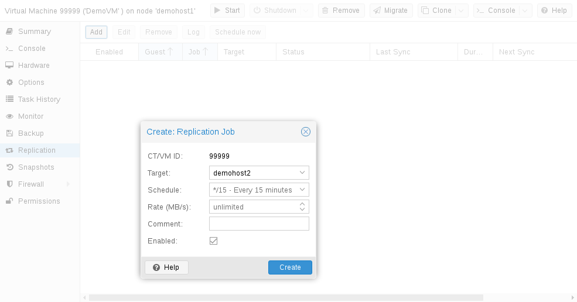

You can use the web GUI to create, modify, and remove replication jobs
easily. Additionally, the command-line interface (CLI) tool pvesr can be
used to do this.
You can find the replication panel on all levels (datacenter, node, virtual guest) in the web GUI. They differ in which jobs get shown: all, node- or guest-specific jobs.
When adding a new job, you need to specify the guest if not already selected
as well as the target node. The replication
schedule can be set if the default of all
15 minutes is not desired. You may impose a rate-limit on a replication
job. The rate limit can help to keep the load on the storage acceptable.
A replication job is identified by a cluster-wide unique ID. This ID is composed of the VMID in addition to a job number. This ID must only be specified manually if the CLI tool is used.